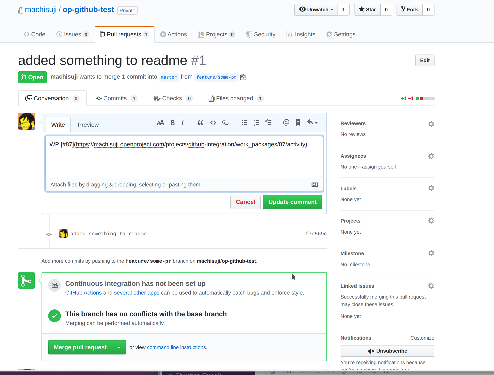
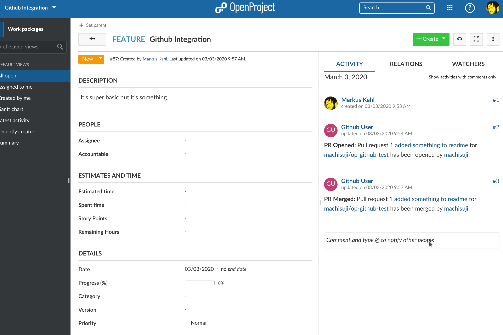
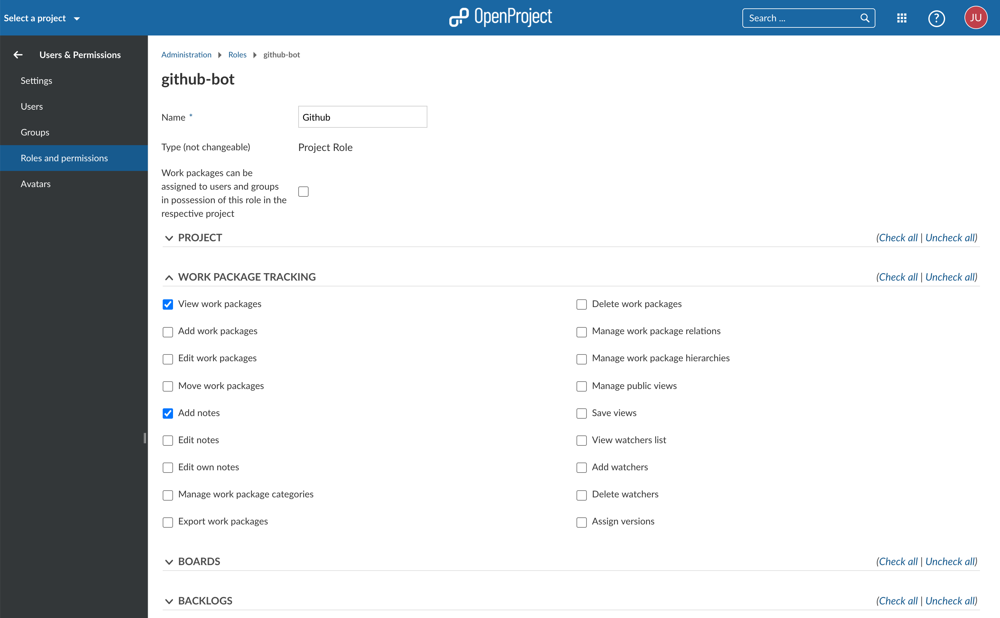
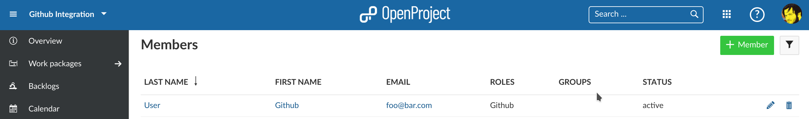
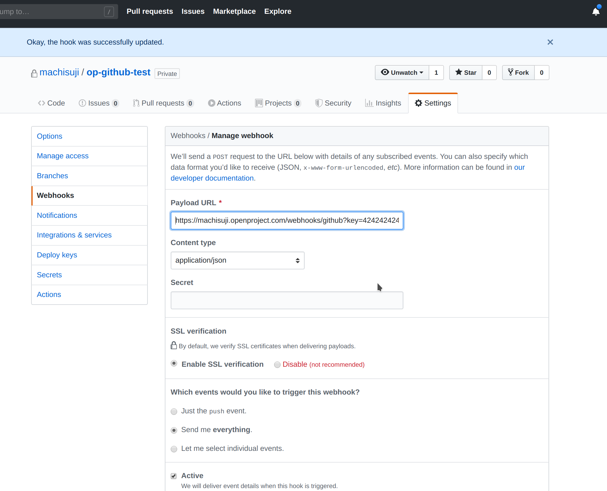

OpenProject offers are very basic GitHub integration for pull requests. You create a pull request in GitHub and link to an OpenProject work package.

Rather than inserting a link to the work package you can also reference it just by adding “OP#87” to the pull request’s description where 87 is the ID of the work package.
OpenProject will add comments to work package about the pull request when the pull request is

Mind that editing an existing pull request’s description to add a work package link will not add a comment in OpenProject. GitHub does not send webhook events for that.
If you still want a comment in OpenProject you will have to reference the work package in a comment on the pull request in GitHub.
You will have to configure both OpenProject and GitHub for the integration to work.
First you will need to create a user in OpenProject that will make the comments. The user will have to be added to each project with a role that allows them to comment on work packages.
The role needs two permissions and should only receive those two: “View work packages” and “Add notes” which you will find in the “Work package tracking” section.


Once the user is created you need to generate an OpenProject API token for it to use later on the GitHub side of things. For this you have to:
Copy the generated key. You can now configure the necessary webhook in GitHub.
In GitHub you have to set up a webhook in each repository to be integrated with OpenProject.

You need to configure just two things in the webhook.
The Content Type has to be application/json.
The Payload URL must point to your OpenProject server’s GitHub webhook endpoint (/webhooks/github).
Now you need the API key you copied earlier. Append it to the Payload URL as a simple GET parameter named key. In the end the URL should look something like this:
https://myopenproject.com/webhooks/github?key=42
Earlier version may have used the api_key parameter. In OpenProject 10.4, it is key.
Now the integration is set up on both sides and you can use it.